Oracle Cloud が Always Free (永久無料枠) を発表したのでアカウント登録してみたが、無料枠が少ない
仕事で Oracle Cloud を使っていたが、最近 Always Free、いわゆる永久無料枠が発表され、VM や Autonomous DB を2台ずつ立てられるようになった。無料枠の GCE や Heroku Postgres を併用したりせずとも、Oracle Cloud だけで Web AP サーバと DB サーバを無料でまかなえるかもしれない、と思い、個人でアカウントを登録してみることにした。
アカウント登録の手順は以下の記事どおり。
次の URL から「Start for free」ボタンを押下し、登録を始める。
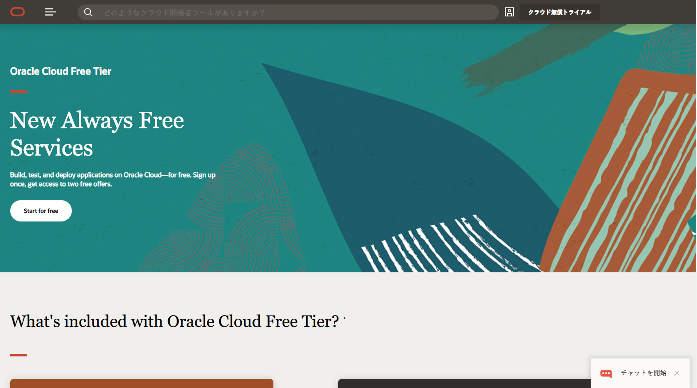
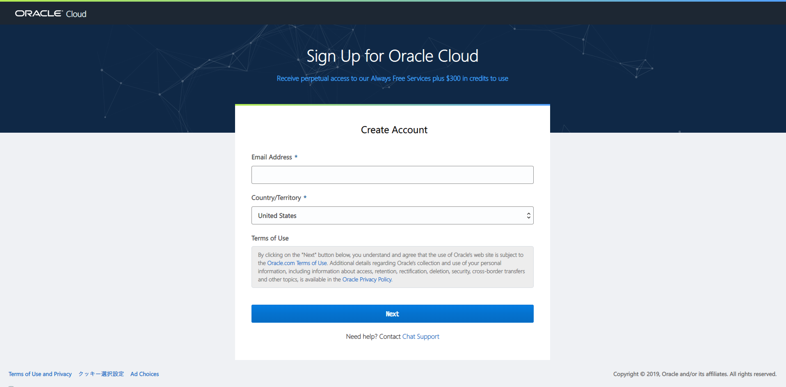
後述するが、無料枠を使う上で重要になるホームリージョンの指定がある画面。
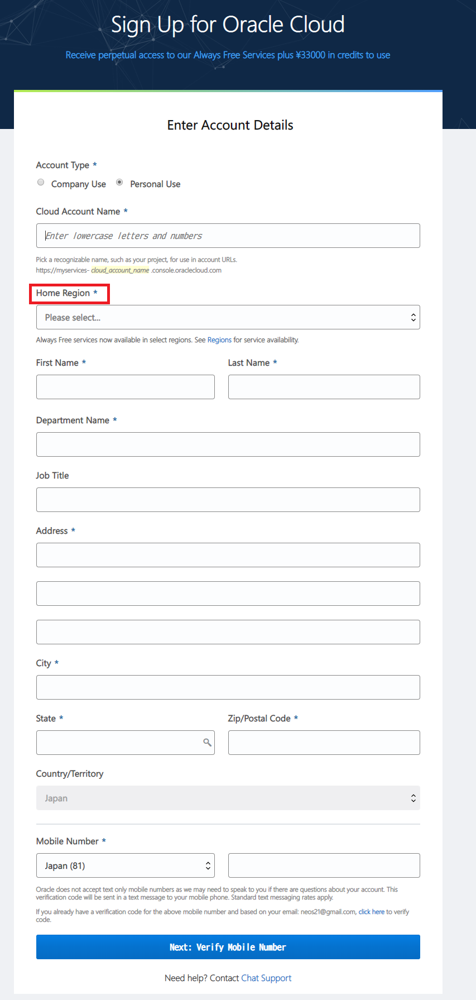
携帯電話番号での認証もある。
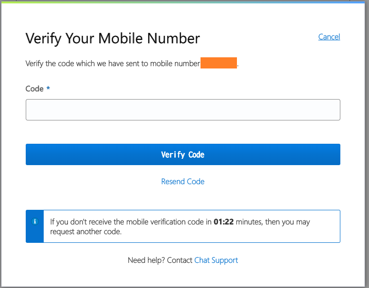
パスワード設定。
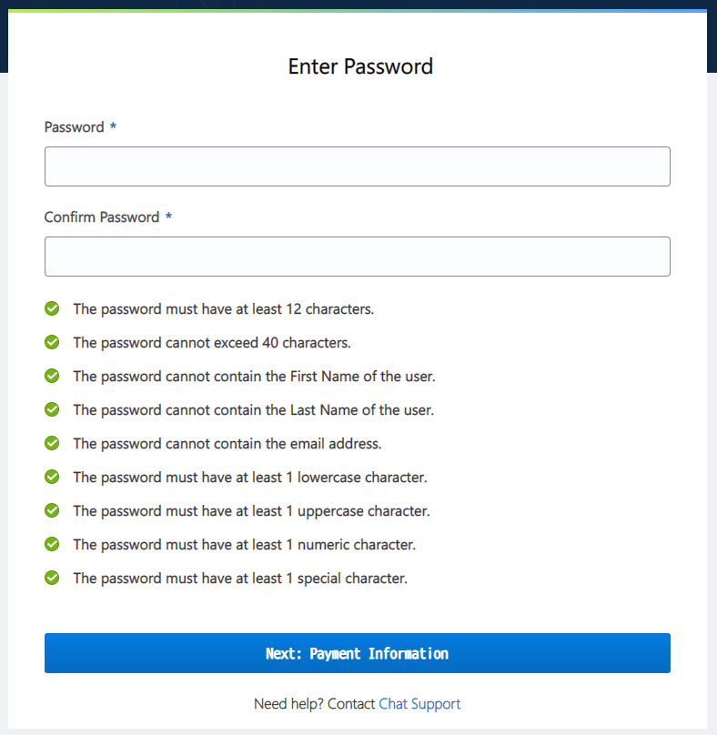
クレジットカード情報も記載するが、無料枠に含まれる約3万円分を使い果たした後も、いきなり課金されることはないので安心。
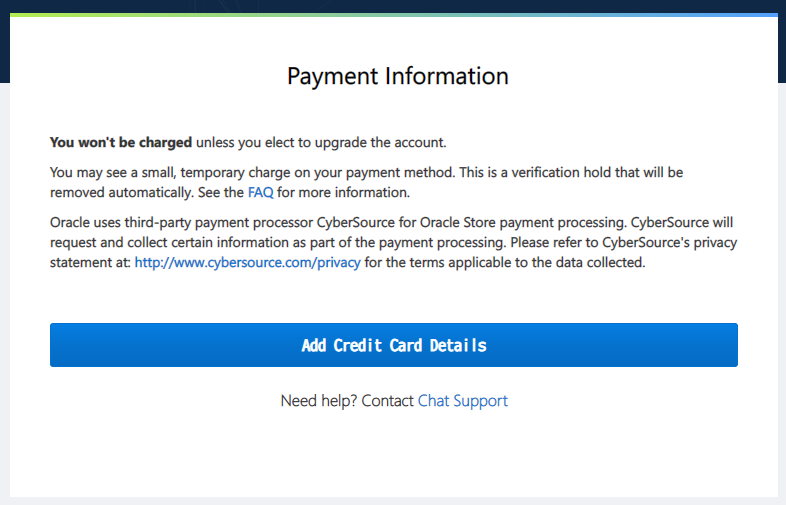
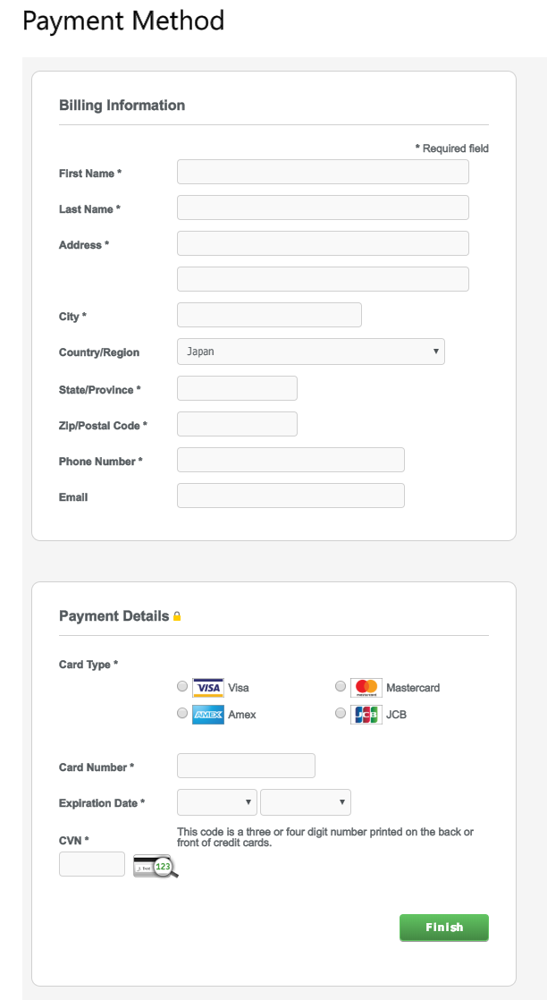
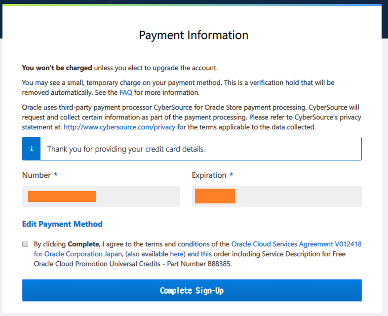
アカウントを作成中。このあとメールが届くので、そのメールからアカウントにログインする。
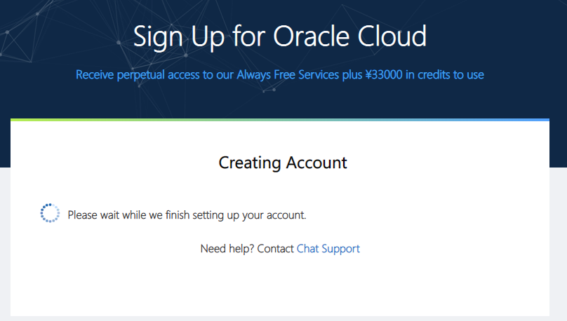
メールはこんな感じ。
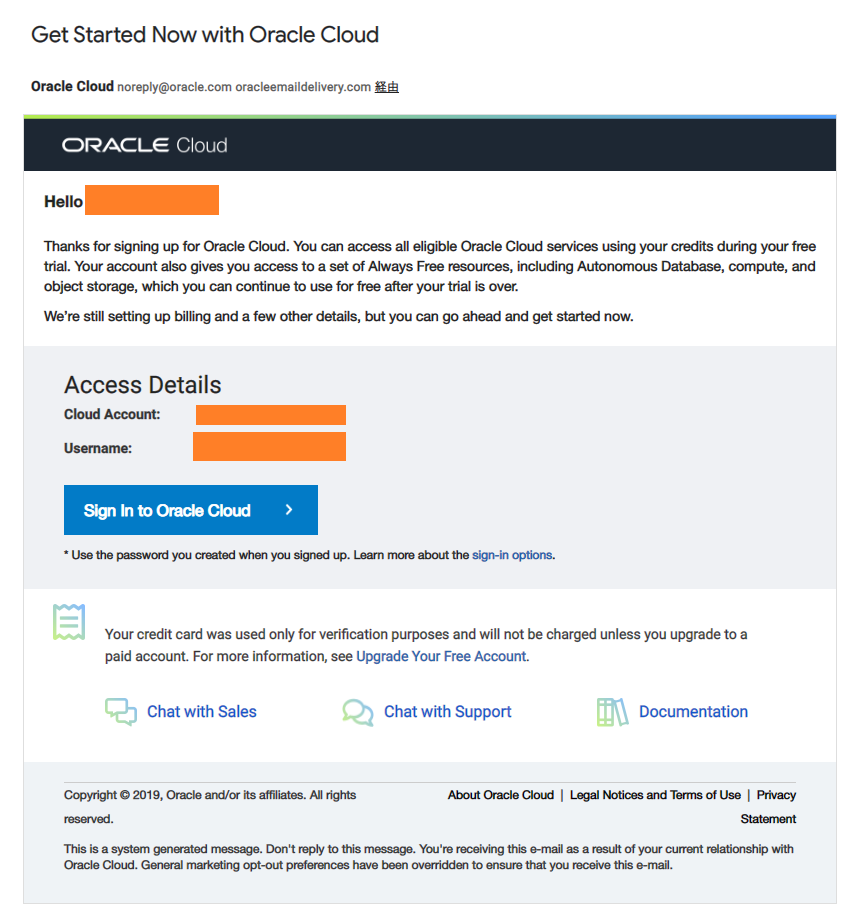
ログイン情報を入れる。
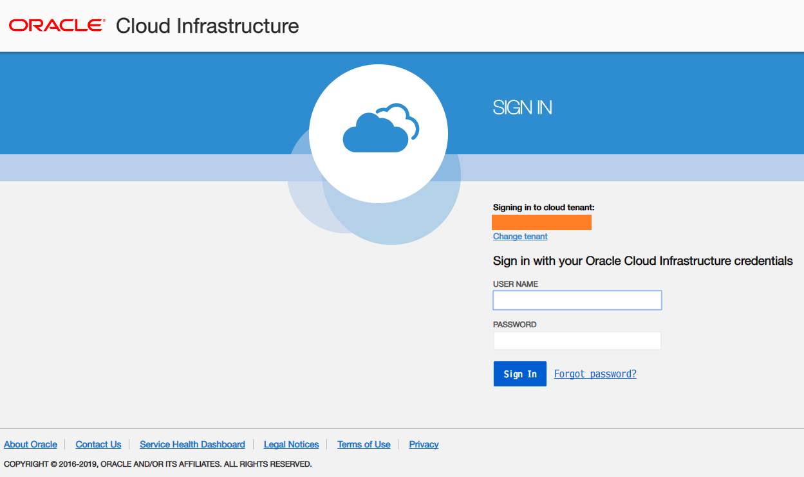
こんな画面に辿り着けたら OK。
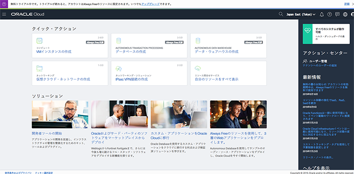
どうも、「Gen2 Cloud」と呼ばれる第2世代のオラクル・クラウド基盤に移行中みたいで、「以前使っていた Cloud My Services はどこ？」とか、「このリージョンでは PaaS が Gen1 基盤を使ってしまって違う画面に飛ばされる」とか、色々と整備が追いついてない感じ…。
エラーが出た時は : 無料枠が作れないかも
Compute Instance を作成しようとしたら、「Out of host capacity.」というエラーが出た。

どうやら無料枠を公開したことで利用者が殺到しているらしく、無料枠のリソースを作成できないようだ。気長に待つしかない。どうも月初は少し登録しやすいみたい。
なお、登録時に選択したリージョン = ホームリージョン以外では、Always Free なリソースを作れない。North America の Ashburn リージョンなんかだと、Tokyo リージョンよりは無料枠のリソースが作りやすいかもしれない。とりあえず無料枠が使えれば良くて、海をまたいだデータセンターでも良ければ、登録時に北米リージョンなどを選択しても良いかも。
インスタンスを作ってみた
今回はテナンシ (ルートコンパートメント) 直下にリソースを作っていく。細かく説明するのが面倒臭いので、雑に紹介。
- VCN (Virtual Cloud Network) を作る
- CIDR Block はデフォルトの
10.0.0.0/16でも良いが、他の Oracle Cloud サービスと Local Peering する時は CIDR Block が重複していてはいけないので、20.0.0.0/16とか適当に違う CIDR にしておく。 - デフォルトの Route Table を確認。Internet Gateway がアタッチしてあれば、その VCN 内からインターネットへ、通信が出られるようになる。
- デフォルトの Security List を確認。通信を許可するポートや IP レンジを指定する。デフォルトで SSH するための22番ポートが許可されている。
- CIDR Block はデフォルトの
- Subnet を作る
- VCN の CIDR Block 内で、
20.0.1.0/24など適当に。 - この Subnet の中に、Compute Instance (VM) を配置していく。
- VCN の CIDR Block 内で、
- Compute Instance を作る
VM.Standard.E2.1.Microというシェイプが、無料で作れるインスタンス。- Public IP は後で付与するので、一旦はナシで良い。
- SSH 接続するための公開鍵を設定しておかないと、SSH 接続する術がなくなるので注意。
$ ssh-keygen -t rsa -b 4096 -N '' -C 'my-instance' -f ~/.ssh/my-instanceみたいなコマンドで鍵ペアを作り、my-instance.pubファイルをアップしておこう。
- Reserved Public IP を作る
- 予約済 Public IP。Networking → Public IPs と進み「Create Reserved Public IP」で Public IP を発行する。
- Compute Instance の VNIC に Reserved Public IP を指定する
- Compute → Instances → Attached VNICs → Primary VNIC を選択 → IP Addresses → Primary IP の「Edit」を選択する。
- Public IP Address 欄で「Reserved Public IP」を選択し、先程作った Reserved Public IP を選択する。
- コレで、Compute Instance に、不変な Public IP を割り当てられた。
あとは、Public IP を指定して、以下のように SSH 接続してみよう。
# Public IP アドレスを指定する
$ ssh -i ~/.ssh/my-instance opc@140.0.0.0
opc というユーザが、Compute Instance 作成時に作られる初期ユーザ。このユーザの authorized_keys に、my-instance.pub (公開鍵) が設定されている、という関係だ。
あとはお好きなようにインスタンスをいじくり回してみよう。Web サーバとして公開したいのであれば、Security List で80番ポートや443番ポートへのアクセス (Ingress) を許可してやる必要がある。
以上
今回は作成しなかったが、Oracle Autonomous DB も永久無料枠で2つまで作れるので、色々遊べそうだ。